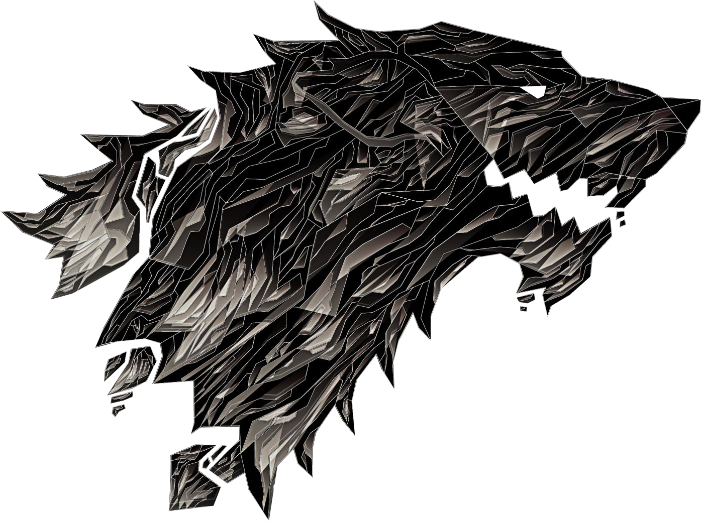

Temática

La saga es conocida por tener personajes complejos, cambios de trama violentos y repentinos, e intrigas políticas bien desarrolladas. En un género donde la magia normalmente posee un papel central en el argumento, Canción de hielo y fuego se caracteriza por un uso limitado y sutil de la misma, empleándola como una fuerza ambigua y, a menudo, oscura.
Además, las novelas no giran alrededor de la lucha entre el Bien y el Mal, sino que los arcos argumentales se basan principalmente en luchas políticas y guerras civiles; sólo hay uno o dos arcos que sugieren la posibilidad de una amenaza externa.